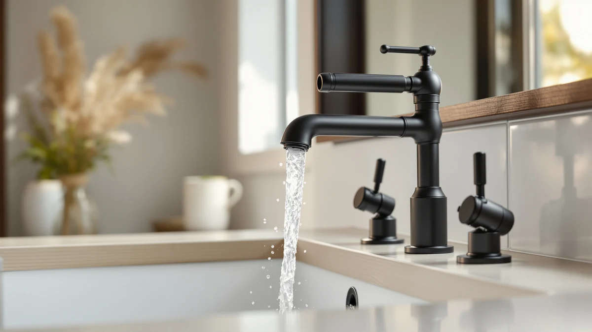

How to Clean Black Bathroom Faucets: Complete Guide (2026)
Prices and picks verified as of September 2026. Independent, reader-supported reviews.


Things to Know Before You Buy
- Black bathroom faucets get their color from a PVD (physical vapor deposition) coating or a powder-coated finish, and abrasive pads or acidic cleaners can strip that layer permanently.
- Hard water leaves visible white mineral spots on black faucets faster than on chrome, because the contrast makes buildup obvious within days.
- Most manufacturers, including Delta and WOWOW, advise against bleach, ammonia, and undiluted vinegar on matte black finishes.
- A soft microfiber cloth and a mild dish soap solution handle everyday grime without touching the coating underneath.
- Drying the faucet by hand after every single wash, on top of the weekly deep clean, is what actually keeps water spots from making a black finish look neglected.
Learning how to clean black bathroom faucets the right way keeps the matte or PVD coating intact, because that finish reacts to chemicals and abrasion in ways that chrome and nickel fixtures never do.
You probably already know the frustration: a fingerprint smudge or a chalky water spot shows up on a black faucet within a day, while the same residue on a polished chrome fixture goes unnoticed for a week. That visibility means your cleaning routine matters more, not less. This guide walks through five steps that remove grime, soap scum, and hard water deposits from black bathroom faucets without dulling the finish or stripping the coating, plus the mistakes that cause the most damage.
What You'll Need
- Supplies: mild dish soap, distilled water, and food-grade mineral oil for an optional protective polish
- Tools: microfiber cloths and a soft-bristle toothbrush
Step 1: Wipe Away Loose Dust and Toothpaste Residue
Before any liquid touches the faucet, do a full dry pass with a soft microfiber cloth. Toothpaste splatter, hair product overspray, and dried soap scum sit on top of the finish, and wiping them away dry keeps you from grinding grit into the coating once you add water.
Pay extra attention to the base where the faucet meets the sink and the underside of the handle, since both spots collect residue that's easy to miss during a quick wipe. Skip this step and go straight to a wet cloth, and you're more likely to smear buildup across the finish instead of lifting it off, which is one of the fastest ways to leave streaks on a black bathroom faucet.
Step 2: Mix a Gentle Cleaning Solution
Fill a small bowl with warm distilled water and add two or three drops of a mild, unscented dish soap. Distilled water matters here more than it would with a chrome fixture, because tap water minerals are what create the chalky spots that stand out so clearly against black.
Stir the solution until it's slightly sudsy, not foamy. A mix that's too concentrated can leave a soap film behind once it dries, and that film shows up as a hazy layer on a black bathroom faucet under bathroom lighting. Keep the ratio light: a small amount of soap goes a long way on these finishes.
Step 3: Clean the Faucet Body, Handle, and Base
Dip a microfiber cloth into the soapy water, wring it out so it's damp rather than dripping, and wipe the faucet spout, handle, and neck along the direction of the finish's brushed lines if it has any. Work in small sections and rinse the cloth as it picks up grime, since a dirty cloth redistributes debris instead of removing it.
For the seams around the base and the handle joint, switch to a soft-bristle toothbrush dipped in the same solution. These tight spots trap toothpaste and hard water residue that a cloth can't reach, and they're usually the first place a neglected black bathroom faucet starts to look dingy. Avoid anything with a scrubbing pad or a rough sponge, since even a "non-scratch" pad can dull a matte black coating over repeated use.
Step 4: Rinse With Plain Water and Dry Immediately
Wipe the entire faucet down with a second cloth dampened in plain water to lift away any leftover soap. Soap residue left on the surface attracts new dust and grime faster, so this rinse step matters even though it feels redundant.
Dry the faucet immediately with a dry microfiber towel, working every surface until no visible moisture remains, including inside the spout opening and around the base. Air-drying lets water sit long enough to leave mineral spots, and those spots are what make a black bathroom faucet look neglected within a day or two of an otherwise thorough clean.
Step 5: Buff the Finish and Apply a Protective Layer
Once the faucet is completely dry, buff it with a fresh, dry microfiber cloth in light circular motions. This step brings back the even sheen that soap and water can leave slightly flat, and it only takes a minute once the faucet itself is clean.
For extra protection between cleanings, apply a few drops of food-grade mineral oil to a cloth and buff it into the finish once a month. The thin layer helps water bead up and roll off instead of drying into spots, which cuts down on how often you need to repeat the full cleaning process on your black bathroom faucet. Skip car wax or silicone-based products unless the manufacturer specifically approves them, since some coatings react differently than others.
Common Mistakes to Avoid
The biggest mistake is reaching for whatever bathroom cleaner is already under the sink. Products with bleach, ammonia, or heavy fragrance additives are formulated for grout and tile, not for the thin PVD or powder coating on a black bathroom faucet, and repeated use dulls the finish or causes it to flake at the edges within months.
Undiluted vinegar causes a similar problem. It works well on calcium buildup around chrome fixtures, but its acidity is harsh enough to etch some black coatings, especially cheaper powder-coated finishes. If a faucet's manual doesn't explicitly approve vinegar, skip it and stick with mild soap.
Abrasive tools are the next culprit. Steel wool, scouring pads, and even the rough side of a standard sponge leave fine scratches that aren't obvious right away but become visible as dull patches once light hits them. A soft microfiber cloth removes the same grime without the risk.
Letting the faucet air-dry is a smaller mistake with the same result: water spots. They show up against a dark finish far more than they would on chrome, so grab a towel and dry the faucet by hand every time it gets wet, not just on cleaning day.
Finally, avoid mixing cleaning products. Combining bleach with an ammonia-based glass cleaner near the sink creates fumes and won't do the finish any favors either.
Our Top Picks
If your current faucet is already scratched, corroded, or too far gone for this routine to fix, these three black bathroom faucets hold up well against regular cleaning and are worth considering as a replacement.

Editor’s Pick
gotonovo Shower Faucet Set with
The gotonovo set pairs a matte black finish with a simple silhouette that has few seams for grime to hide in, which makes the routine in this guide faster to repeat.
$69.99
Check Price on Amazon
Best Value
WOWOW Black Bathroom Faucet 3
Owners report WOWOW's finish resists water spotting better than cheaper black faucets in the same price range, even with daily wiping.
$43.99
Check Price on Amazon
Premium Choice
BWE Matte Black Bathroom Faucet
The BWE faucet's single-lever design skips the tight seams you get around dual handles, so there's less area where toothpaste and soap scum can build up between cleanings.
$39.99
Check Price on AmazonCan you use vinegar to clean a black bathroom faucet?
Only if the manufacturer's care instructions specifically allow it.
Why does my black bathroom faucet still look spotty after I clean it?
Spots after cleaning almost always mean the faucet wasn't fully dried.
Frequently Asked Questions
Can you use vinegar to clean a black bathroom faucet?
Why does my black bathroom faucet still look spotty after I clean it?
Can you use Windex or another glass cleaner on a black bathroom faucet?
How often should you clean a black bathroom faucet?
Will scrubbing damage the matte black finish on my faucet?
Verdict
Cleaning black bathroom faucets comes down to two habits: use a mild, non-abrasive solution instead of harsh chemicals, and dry the finish completely every time water touches it. Skip either one and a matte black or PVD-coated faucet starts showing water spots, dull patches, or scratches within weeks, well before a chrome fixture in the same condition would show any wear.
The five steps in this guide, a dry wipe, a gentle soap solution, careful cleaning, a thorough rinse and dry, and a final buff, take about 20 minutes and cost next to nothing beyond supplies you likely already own. If your current faucet is too far gone for this routine to fix, a replacement like the gotonovo set gives you a clean slate with a finish built to hold up against regular care. Either way, the same rule applies: how you clean black bathroom faucets matters as much as how often you do it.